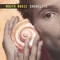

Celtic Lyrics Corner > Artists & Groups > Mouth Music > Shorelife
|  |
Shorelife
(1995) |
| Tracks : |
1.
Move On
2. Tomorrow 3. World Is For All 4. Time 5. Ruler Of The Tides 6. Make It Real 7. Forever To Travel 8. Infinity 9. Colour Of My Love |